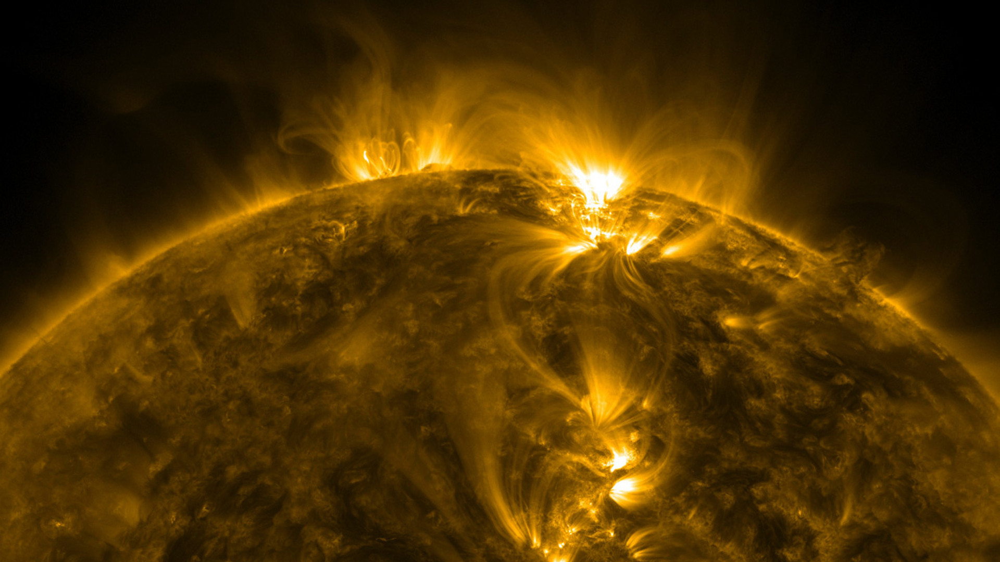

Du må bruke presentasjonsmodus/fullskjermsvisning for å lese denne, men du skal ikke bruke frem/tilbake-knappene, KUN knappene som dukker opp på sliden for å ta deg videre! Ofte må du laste filen ned til maskinen din og åpne den der for å få til dette. Merk at noen knapper vil åpne nettskjema, videoer eller andre ressurser i internettbrowseren din. Når du gjør det riktig, skal du kun se en side av gangen, og når du trykker på knappene som dukker opp på skjermen så skal disse ta deg frem/tilbake i dokumentet. Du vil miste mye læringsutbytte hvis du ser flere slides av gangen. Får du det ikke til, spør foreleser/gruppelærer!
Trykk denne knappen for å begynne
Dette er en erstatning for forelesningen i emnet. Har du gått skikkelig gjennom disse interaktive forelesningsnotatene så trenger du ikke å lese de fulle forelesningsnotatene (med unntak av oppgavene bak). All informasjonen du trenger, får du her. Du kommer til å få mange grublespørsmål og diskusjonsoppgaver, det er meningen at disse skal gjøres i grupper av minst 2, maks 4 studenter. Det er defor sterkt anbefalt at dere sitter sammen i grupper når dere går gjennom disse interaktive forelesningsnotatene, du vil få betydelig mer utbytte av dem på den måten. En god ide kan være å bli enige om å treffes til den faste forelesningstiden og bruke forelesningslokalet som kommer til å være resevert til dette. Hvis du har kommentarer ris/ros til disse forelesningsnotatene eller til emnet, trykk på 🙂 🙁 knappen som du finner på alle sider.
Trykk denne knappen for å begynne
HUSK at du får mer ut av de interaktive forelesningsnotatene når du gjør de sammen med noen. Diskusjonene med andre er svært viktige.
Det er mange spørsmål/grubliser underveis, sett dere selv en tidsgrense, 1-2 minutter på de korte, 4-5 minutter på de lenger. Ha en alarm ved siden av, ellers kommer dere til å bruke alt for langt tid. Har dere ikke fått det til etter 5 minutter, gå videre, se svaret og lær!
Er du i det minste tvil om noe, så finnes det nå en PADLETknapp, trykk det og still spørsmål med en gang mens du enda husker spørsmålet!
Trykk denne knappen for å begynne
Forrige side
 Velkommen til forelesning 1 av 2 i del 3D! En stjerne har blitt født og har begynt fusjon i sentrum. Stjernen er på hovedserien. Men hva betyr det egentlig at stjernen er på hovedserien? Det skal vi se litt på! Vi skal se på sammenhenger mellom luminositet, masse og temperatur til stjerner. Og så skal vi se hva som skjer i alderdommen. Den første forelesningen i del 3D tar normalt ca. 1 time i den fysiske forelesningen, dvs. halvparten av en dobbelttime. Den andre forelesningen i del 3D er lenger og tar normalt en hel dobbeltime.
(Illustrasjon: Solen observert med Solar Dynamics Observatory (Image: NASA/SDO)) Neste side
‘ Forrige side🙂 🙁IntroduksjonPADLET
Vi begynner som vanlig... ...med litt brainstorming. Som det er svært viktig at du gjør før du går videre.
Trykk her for å varme opp
Er du klar og har sendt inn skjemaet? Nei Ja
Nytt tema:
Spektralklasser
Tilbake til HR-diagrammet ja...
Forrige side🙂 🙁SpektralklasserPADLET
Vi skal studere HR-diagrammet litt grundigere, se forskjellige formater og prøve å forstå hvorfor det ser ut slik som det gjør.
Har du lagt merke til at HR-diagrammene vi har vist så langt også har spektralklasse på x-aksen i tillegg til temperatur? (se x-aksen øverst). Før man forstod fysikken bak, så klassifiserte man stjerner etter hvilke spektrallinjer man fant i spektrene. Det er først senere man forstod at dette henger sammen med stjernenes temperatur.
Forrige side🙂 🙁SpektralklasserPADLET
Men hvordan kan det være en sammenheng mellom hvilke spetrallinjer man ser og temperaturen til en stjerne?? La oss ta et eksempel: En av de vanligste absorpsjonslinjene i en stjerne er Hα-linjen som er overgangen mellom nederste og nest-nederste energinivå for elektronet i hydrogenatomet (husk Bohrs atommodell). Hvis man i en stjerne ikke finner Hα-linjen, tror du det betyr at stjernen er ... kald eller varm
Forrige side🙂 🙁SpektralklasserPADLET
Det ble galt! Hvis gassen er kald, så har atomene og elektronene lite energi og elektronet vil for det meste være i laveste energitilstand, noe som gjør at det lett absorberer et foton slik at det hopper opp til neste energitilstand.
Forrige side🙂 🙁SpektralklasserPADLET
Det stemmer! Når temperaturen er høy så har atomet og elektronet mye energi, elektronet vil ofte være eksitert i en høyere energitilstand, dermed kan det ikke hoppe fra det laveste nivået og lage en Hα-absorpsjonslinje. Hvis temperaturen er veldig høy så er hydrogen ionisert, dvs. at elektronet og atomkjernen er separert, da kan vi ihvertfall ikke få noen absorpsjon mellom laveste og nest-laveste nivå, da vil ikke hydrogenatomet kunne absorbere i det hele tatt.
Forrige side🙂 🙁SpektralklasserPADLET
Altså: hvis temperaturen er lav, så er atomene i grunn-tilstanden (de har lite energi), og vi få mange absorpsjonsliner fra grunn-tilstanden og oppover (slik som Hα-linjen). Når temperaturen er høy så har atomet og elektronet mye energi, elektronet vil ofte være eksitert i en høyere energitilstand, dermed kan det ikke hoppe fra det laveste nivået og lage en Hα-absorpsjonslinje. Hvis temperaturen er veldig høy så er hydrogen ionisert, dvs. at elektronet og atomkjernen er separert, da kan vi ihvertfall ikke få noen absorpsjon mellom laveste og nest-laveste nivå, da vil ikke hydrogenatomet kunne absorbere i det hele tatt. Dette gjelder også andre atomer, noen av disse blir eksitert ionisert tidligere enn andre, avhengig av energien som er nødvendig til å få dette til. Dermed vil kombinasjonen av spektrallinjer fra gassen være sterkt korrelert med temperatur.
Forrige side🙂 🙁SpektralklasserPADLET
De varmeste blå stjernene har spektralklasse “O”, de er O-stjerner, de kaldeste røde stjernene har spektralklasse M, de er M-stjerner. På den måten omtaler astronomer stjerner og dermed implisitt sier noe om temperaturen (og dermed også massen som vi skal se senere). Spektralklasseinndelingen er faktisk enda finere enn dette, hver spektralklasse er delt inn i 10 underklasser nummerert fra 0 til 9. De varmeste F-stjernene kalles F0-stjerner, de kaldeste F9.
Forrige side🙂 🙁SpektralklasserPADLET
Her ser vi et annet HR-diagram (fra Wikipedia). Det første du skal legge merke til her er romertallene som står bak de lilla linjene som beskriver stjernetypene inne i diagrammet. Dette er det vi kaller luminositetsklasser, en grovinndeling av luminositetene til stjernene fra Ia til VII, igjen basert på spektrene. Det viser seg at spektrene selv innenfor samme spektralklasse kan være forskjellige avhengig av luminositetsklasse. Med denne klassifiseringen er solen en G2V-stjerne.
Nytt tema:
Fargeindekser
20 spensthopp før du går videre...
...og stå på hodet i et minutt Jeg har strekt bena og er klar...
Forrige side🙂 🙁FargeindekserPADLET
Har du sett noe annet som er forskjellig på aksene i dette HR-diagrammet?
Det stemmer! Der står det noe om fargeindeks! Husker du dette med størrelseklasser med filtre? Altså mV eller MV for visuell størrelseklasse, mB eller MB for blå størrelseklasse, osv. (fra del 3A).
Ja!Nei, men nå repeterte jeg det!
Når det på x-aksen står fargeindeks B-V, så betyr det mB − mV eller MB − MV. Men hvilken av dem?
Forrige side🙂 🙁FargeindekserPADLET
La oss tenke litt, mB − mV er vel den tilsynelatende størrelseklassen målt i blått lys minus den målt i visuelt (altså midt i det synlige fargespektret). Hvis vi har en glovarm blå stjerne, blir mB − mV da et positivt eller negativt tall?
Hvis stjernen er blå betyr det at den lyser sterkt i blått lys. Stor fluks betyr liten størrelseklasse mB (det må du ha kontroll pa nå!). Den lyser dermed mindre sterkt i andre deler av det synlige spektret. Fluksen tatt med V-filter er altså mindre, og dermed er mV større enn mB, noe som gir at mB − mV er et negativt tall for blå stjerner. Ser du på HR-diagrammet her og x-aksen, så ser vel det riktig ut?
Forrige side🙂 🙁FargeindekserPADLET
Vi snakket så langt om mB − mV. Hvordan blir det med absolutt størrelseklasse? Hvis vi tar MB − MV istedenfor mB − mV for vår blå stjerne. Vil den da også bli negativ?
Må ikke den faktisk også bli negativ? Det at vi går fra tilsynelatende til absolutt størrelseklasse betyr jo bare at vi måler mottatt fluks i en avstand av 10pc isteden for den faktiske avstanden. Det vil endre på mottat fluks, men vil vel ikke endre det faktum at det blir mottatt mer blått enn f.eks. gult lys? Det må være det samme i alle avstander (med mindre det er noe mellom oss og stjernen som tar opp lys bare i gitte farger).
Forrige side🙂 🙁FargeindekserPADLET
Hvis vi er enige om at det relative forholdet mellom fluks på forskjellige bølgelengder (farger) normalt ikke endrer seg (hvis du ikke er enig, ta en prat med foreleser!), må det ikke da være slik at
forskjellen mB − mV må være lik forskjellen MB − MV? Altså mB − mV = MB − MV ??? Kan du utlede dette matematisk? Ta nå og kikk på de forskjellige formlene du har som inneholder størrelseklasser (sammenheng mellom størrelseklasser og fluks samt sammenheng mellom tilsynelatende og absolutt størrelseklasse, se del 1D og del 3A). Husk at du her kan bytte ut m, M og F med de tilsvarende filtrerte størrelsene så lenge du gjør det konsekvent i samme likning. Klarer du å utlede det? Ikke gå videre før du har gjort et skikkelig forsøk!
Forrige side🙂 🙁FargeindekserPADLET
Fikk du til utledningen? Hvis ikke, skal du få et hint. Hint, pleeeease!
Hint skal bli. Du har den kjente sammenhengen mellom tilsynelatende og absolutt størrelseklasse $$m-M=5\log{\frac{r}{10\mathrm{pc}}}$$ Skriv dette ut først som visuelle størrelseklasser, deretter som blå størrelseklasse. Trekk likningene fra hverandre og vips...
Forrige side🙂 🙁FargeindekserPADLET
Hvis du ikke fikk til utledningen med hintet, spør foreleser! Dette må du ha kontroll på og forstå!
Dermed ser du hva fargeindeksen B − V som er på x-aksen er for noe: B − V = mb − mV = MB − MV Dette er altså en størrelse som vi kan beregne uten å kjenne avstanden til stjerna, kun tilsynelatende størrelseklasse på forskjellige bølgelengder. Men hvorfor er dette relatert til temperatur? Vi pleier jo å ha temperatur på x-aksen, nå står det B-V isteden! Vi ser at lav B-V tilsvarer høy temperatur og høy B-V tilsvarer lav temperatur. Hvorfor det??? Diskuter før du går videre!
Forrige side🙂 🙁FargeindekserPADLET
Fant du ut av det??? Få se svaret da!
Aha, en varm stjerne har toppen i Planck-spektret på lavere bølgelengder (husk Wiens forskyvningslov!) som tilsvarer blått lys. Og hvis intensiteten og dermed også fluksen er større i blått lys, får vi (som vi fant ut for et par sider siden) en lav og til og med negativ fargeindeks. Helt motsatt, hvis temperaturen er lav, vi har mest Planck-stråling på lange bølgelengder (rødt lys), så har vi mindre fluks i blått enn i visuelt og vi får en større og positiv fargeindeks. Skjønner? Hvis ikke, spør foreleser!
Nytt tema:
Hovedserien
20 situps før du går videre...
...psssst! en liten tår kaffe er lov... Jeg har strekt bena og er klar...
Forrige side🙂 🙁HovedserienPADLET
Da har du sett at vi på x-aksen i et HR-diagram kan ha, både temperatur, spektralklasse og fargeindeks. Du har også sett hvorfor disse tre er sterkt relatert. Du har ogsa sett at vi kan ha luminositet, absolutt størrelseklasse eller luminositetsklasse på y-aksen.
Men nå er jeg sikker på at du helt siden del 3A ikke har sovet om natte fordi du har lurt fælt på hvorfor i alle dager stjernene ligger langs denne skrå linjen i HR-diagrammet som vi kaller hovedserien? Fortvil ikke, dette eksistensielle spørsmålet skal nå få et svar, du skal innen dagen er omme få nattesøvnen tilbake. Men alle disse nettene som du har ligget og grublet, kom du frem til en hypotese om hvorfor det er slik? Og om ikke nattegrubling var nok, ta nå en diskusjon med andre studenter, kan dere se hvorfor det må være sånn? (Hint: Fluks, luminositet, sort stråling og sånt.)
Forrige side🙂 🙁HovedserienPADLET
Hvis du har et kuleformet sort legeme (la oss kalle det en stjerne), kan du uttrykke luminositeteten L til dette ved hjelp av overflatetemperatur T og radius R? Hvis du trenger å friske opp sort stråling, fluks og luminositet, kikke tilbake på del 1D. Jeg har skrevet ned uttrykket!
L = 4πR2σT4 Right? Har du lagt merke til at HR-diagrammene er log-log-plott? Det at vi har logaritmiske akser betyr egentlig at vi plotter logaritmen til størrelsene. Det vil si at egentlig er det log L som funksjon av log T som er plottet i HR-diagrammet. Hvis vi tar log av denne likningen får vi log L = log 4πR2σ + 4log T Enig?? (produktregel for logaritme). Har du nå en ide om hva det betyr at stjernene legger seg i en rett linje i HR-diagrammet?.
Forrige side🙂 🙁HovedserienPADLET
Siden vi i HR-diagrammet plotter log L som funksjon av log T så kan vi vel sammenlikne log L = 4log T + log 4πR2σ med likningen for en rett linje y = ax + b ikke sant? OK! Stemmer vel det.
Vi ser at dette er en rett linje med stigningstall 4 (husk at T øker i motsatt retning på x-aksen) og med log 4πR2σ som konstanten som skifter denne linja opp og ned. Men hva sier dette oss om hovedseriestjernene???? Ikke bla om før du har et forslag!
Forrige side🙂 🙁HovedserienPADLET
Hvis vi igjen ser på likningene: log L = 4log T + log 4πR2σ men likningen for en rett linje y = ax + b Hvis vi antar at alle stjerner har samme radius R, så vil vel alle stjerner ligge langs en rett linje i HR-diagrammet?. Det må vel bety at det hovedseriestjerner har til felles er at de har omtrent den samme radiusen? VEL, nå er jo hovedserielinja ganske bred, så nøyaktig samme radius svarer det vel ikke til, men kanskje i samme radiusområde? La oss bruke dette uttrykket til å plotte linjene med konstant radius (men flere linjer med litt forskjellige radiuser) inn i HR-diagrammet.
Forrige side🙂 🙁HovedserienPADLET
(http://astro.wsu.edu/worthey/astro/html/lec-hr.html)
I dette HR-diagrammet ser du flere linjer plottet med uttrykket log L = 4log T + log 4πR2σ
for forskjellige verdier av R. Ser du at det vi kaller hovedserie er stjerner med samme radius, en radius omkring radien til solen? (ikke overraskende siden også solen ligger i dette båndet). Bredden av båndet er slik at stjerner i hovedserien har radius i intervallet . Stjerner flest har altså en radius i dette intervallet og derfor ligger også stjerner flest i dette diagonale båndet. Etter at en nyfødt stjerne har har nådd hydrostatisk likevekt, så har stjernen en slik radius (bestemt av den hydrostatiske likevekten!) og ligger dermed i dette båndet. Som vi skal snart skal se så vil stjerner som har brukt opp hydrogenet i sentrum ese ut, få mye større radius og dermed forlate hovedserien.
Forrige side🙂 🙁HovedserienPADLET
Det hovedseriestjerner har til felles er at de alle fusjonerer hydrogen til helium i kjernen.
De har kjernetemperaturer omtrent i samme temperaturområde som gjør at den hydrostatiske likevekten gir en radius i omtrent samme område for hovedseriestjerner. Men det er likevel en viss avhengighet av massen til stjerna. Vi skal snart lære at overflatetemperatur og masse henger sammen, jo høyere temperatur, jo høyere masse. Stjernene til venstre i diagrammet har større masse, og vi ser at hovedserien der gjør en oppsving til større radier. Vi ser også at det er omvendt for lave temperaturer/masser. Men finnes det noen grense for hvor stor eller liten masse en stjerna kan ha?
Forrige side🙂 🙁HovedserienPADLET
Ja gjør det egentlig det?
Finnes det noen grense for hvor stor eller liten masse en stjerna kan ha? Hvis det gjør det, hva (hvilken fysisk prosess) gjør at det finnes en minste grense? Og hva gjør at det finnes en øvre grense? Jeg har tenkt meg godt om og har et forslag!
En stjerne kan ikke ha mindre masse enn ca. 0.08M⊙ fordi... fordi at...
Stjerna når hydrostatisk likevekt før temperaturen er høy nok til å starte fusjonsreaksjoner. Med lav masse og dermed liten tyngdekraft trengs ikke så høy temperatur for å få et stort nok mot-trykk. Skjønner? Slike mislykkede stjerner kaller vi brune dverger
En stjerne kan ikke ha større masse enn ca. 100M⊙ fordi... fordi at...
Ved sammentrekning så er tyngdekrafta så stor, og lager så fort en så høy temperatur, at gasstrykket vinner over tyngdekrafta før vi når hydrostatisk likevekt. Vi får dermed ikke dannet noen stjerne.
Forrige side🙂 🙁HovedserienPADLET
En stjerne begynner altså som en stor sky av gass som trekker seg sammen under sin egen gravitasjon.
Hvis massen er i intervallet , vil vi nå et punkt der temperaturen i sentrum er så høy at vi får fusjonsreaksjoner og vi får dannet et mot-trykk mot gravitasjon.
Stjernen når hydrostatisk likevekt på en radius i intervallet og har blitt en hovedseriestjerne.
Dette bør du ha oversikt over, også tallene bør du omtrentlig kunne!
Etter noen millioner eller milliarder år så har hydrogenet i kjernen blitt brukt opp i kjernereaksjonene, stjernen eser ut og blir en kjempestjerne.
Den flytter seg da opp til kjempegrenene i HR-diagrammet.
Neste tema går ut på å beregne omtrent hvor lenge en stjerne holder seg på hovedserien. Men før det skal du få en grublis!
Forrige side🙂 🙁HovedserienPADLET
Før stjerna har blitt en stjerne, altså mens den er en enorm GMC (Giant Molecular Cloud, se del 3B), hvor finner vi gass-skya på HR-diagrammet??
Laaangt ned og laaangt til venstre Laaangt opp og laaangt til venstre Laaangt opp og laaangt til høyre Laaangt ned og laaangt til høyre
Forrige side🙂 🙁HovedserienPADLET
Det ble galt!
Forrige side🙂 🙁HovedserienPADLET
Det ble riktig!
Forrige side🙂 🙁HovedserienPADLET
Husk at en GMC er enorm, flere lysår stor! Husker du sammenhengen mellom luminositet, temperatur og radius? L = 4πR2σT4 Selv om temperaturen er lav, så er radien enormt stor og opphøyd i andre, dermed får vi en veldig stor luminositet men lav temperatur. Fluksen (energien per m2) er liten men arealet som denne fluksen strømmer ut ifra er enorm. Dette er oppe og til høyre i HR-diagrammet, langt til høyre for stjernene. Derfra beveger den seg til venstre ettersom temperaturen går opp, og mer eller mindre nedover når radien og dermed også luminositeten går ned (eller holder seg omtrent). Så begynner fusjonsreaksjoner og stjernen stabiliseres på hovedserien.
Forrige side🙂 🙁HovedserienPADLET
Husker du tilstandslikningen for ideel gass? Var ikke det $$P=\frac{\rho kT}{\mu m_H}$$ Sjekk at du husker hva alle symbolene står for her! Tenk nå at du ser på gass-strykket i sentrum av stjernen. Hva skjer etter millioner av år med fusjonsreaksjoner? Hvordan vil trykket endre seg? Blir det større eller mindre???
Forrige side🙂 🙁HovedserienPADLET
Ikke heeelt. Hva skjer med μ? Hvis du plutselig har masse heliumatomer og færre hydrogenatomer, vil ikke μ endre seg? Hvordan vil det påvirke trykket?
Forrige side🙂 🙁HovedserienPADLET
Det er helt riktig!. $$P=\frac{\rho kT}{\mu m_H}$$ Her øker jo μ ettersom vi få mer og mer helium. Husk at μ er et mål på midlere masse til atomkjernene, hvis vi får mer helium som er tyngre og mindre hydrogen etter kjernereaksjoner så må μ øke! Fra tilstandslikningen ser vi at hvis μ øker, så må trykket minke. Og hvis trykke blir mindre, så vinner gravitasjon litt! Og hvis gravitasjons da klarer å presse stjernen litt mer sammen så vil radien med tiden bli litt mindre.. Stjernen krymper litt på hovedserien, men på meget sakte tidsskala. Men hvor lenge holder den på med dette da? Hvor lenge lever stjernen på hovedserien? Det må vel være til den har brukt opp alt hydrogenet i de sentrale delene av stjernen der fusjonsreaksjonene foregår, men hvor lang tid tar dette?
Forrige side🙂 🙁 Akkurat det skal vi se på i neste forelesning! Du er ferdig med forelesning 1 av 2 i del 3D. Neste forelesning i del 3D krever forberedelse. Du må lese og lære så godt du kan underavsnitt 3 om “From the main sequence to the giant stage” i del 3D.
Du bør nå:
Vite hvilke størrelser og enheter man kan ha på aksene i et HR-diagram
Vite hvorfor hovedserien er en skrå linje i HR-diagrammet
Vite hvilke masser og radier stjerner kan ha og hvorfor
Flott hvis du nå kan klikke på smilefjesene over og fortelle hva du synes om dette interaktive forelesningsnotatet. Hva var bra og nøyaktig hva kan forbedres? All ris og ros mottaes med takk!